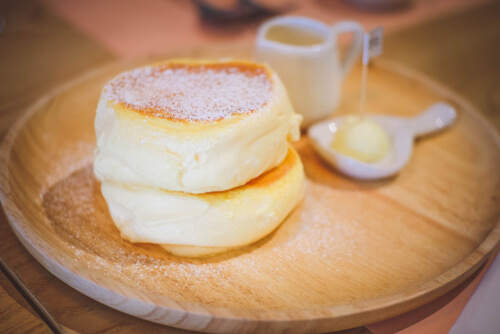

How to make fluffy pancakes

Ingredients
- 1 1/2 cups all purpose flour or maida
- 2 tbsp Sugar
- 1 tbsp baking powder
- 3/4 tsp salt
- 1 1/4 cups milk
- 1 egg
- tsp Vanilla extract
- 4 tbsp Melted butter
- raspberry
- sugar syrup
Preparation
- 1. In a small bowl, combine flour, sugar, baking powder and salt.
- 2. Combine egg, milk and shortening; stir into dry ingredients just until moistened.
- Pour batter by 1/4 cupfuls onto a greased hot griddle.
- Turn when bubbles form on top of pancakes.
- Cook until the second side is golden brown.